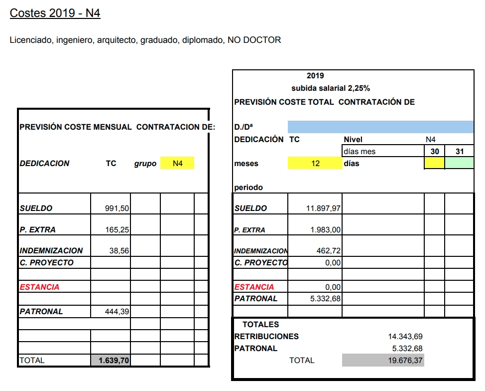

Home / Blog / Academic Life / ¿Cuál es el sueldo de un investigador en la Universidad?
¿Cuál es el sueldo de un investigador en la Universidad?
Esta vez vamos a hablar de una de las peores facetas de trabajar como investigador para la universidad pública española: temporalidad, precariedad, incertidumbre, inestabilidad, burocracia, falta de financiación, endogamia, amiguismo, envejecimiento de la plantilla, desactualizaciónsueldo. Vamos a ir calculando qué sueldo neto mensual obtienen las distintas figuras del investigador (lo que tú realmente ves ingresado en el banco), desde recién graduados hasta doctorandos. Salvo que se indique lo contrario, todos los sueldos que veamos corresponden a trabajadores de la Universidad de Zaragoza con una dedicación a Tiempo Completo (TC).
Aunque todos los sueldos tratados son públicos, a veces no nos hacemos a la idea de cuánto dinero vamos a obtener a final de mes para saber si esta vida profesional nos interesa y, sobre todo, qué sueldo vamos a cobrar a medida que cumplamos años. Esta recopilación va dirigida principalmente a aquellos estudiantes que tienen su primer contacto laboral a través de la Universidad, así que solamente veremos los puestos más bajos (los que no requieren un doctorado).
DISCLAIMER: todos los sueldos netos son transcipciones de mis nóminas o las de conocidos. Las cifras aquí presentadas pueden variar ligeramente en función de la situación de cada uno.
TL;DR
Figura
Requisitos
Rango edad
Sueldo neto mensual
Nº pagas
Investigador Novel (N4)
Grado
22-24 años
883 €
14
Investigador Iniciado (N3)
Grado, Máster
23-26 años
986 €
14
Investigador Iniciado (N3.1)
Grado, Máster, 2 años investigando
25 años hasta doctorarse
1269 €
14
Beca predoctoral DGA
Grado, Máster, ganar una convocatoria pública
23-27 años
1191 €
12
Investigador Novel (N4)
A todo el mundo nos hace ilusión nuestro primer trabajo. Y el Investigador Novel (N4), en adelante simplemente N4, es el primer tipo de contrato que ofrecen a un recién graduado en la Universidad. Todos los sueldos de investigador son públicos, y se asignan según los estudios que tengas. En el caso de un N4, si consultamos su sueldo en la página de la Vigerencia de Investigación, nos encontramos con una tabla en la que aparece la bonita cifra de 19 676,37 € (Figura 1).

Figura 1. Costes de contratación de un N4.
Joder, 19 676,37 € de sueldo bruto anual como primer trabajo de un recién graduado en España es (desgraciadamente) un buen sueldo. ¿De qué se queja este chico? Pues de que esta cifra es lo que le cuesta a tu jefe contratarte. Si te fijas dos filas más arriba verás exactamente qué te están ofreciendo cuando te quieren contratar como un N4, 14 343,69 € brutos anuales. Para poner esta cifra en perspectiva, el Salario Mínimo Interprofesional (SMI) en España para este 2021 es de 13 300 € brutos anuales.
Este tipo de contrato es en 14 pagas, por lo que a final de mes recibirás un sueldo neto de 883 €. Calcular los rangos de edad es muy dependiente de la situación de cada uno, pero partiendo de la situación idílica de que pudiste empezar el Grado a los 18 años y que te graduaste en los años que te tocaban, trabajarías en este puesto desde los 22 años hasta que obtengas un máster. Dependiendo de los créditos del máster que elijas, puedes ser N4 desde los 22 años hasta los 23 años (60 ECTS de Máster), 23,5 años (90 ECTS) o 24 años (120 ECTS).
Una situación típica es que te ofrezcan un puesto de N4 con dedicación a Tiempo Parcial (TP) mientras te estás sacando el Máster. En este caso, seguimos hablando de un sueldo en 14 pagas, pero esta vez se establece el sueldo neto mensual en 454 €.
Investigador Iniciado (N3)
El puesto de Investigador Iniciado (N3) se otorga a aquel trabajador que tiene un máster, independientemente de si ha investigado con anterioridad o no. Cosas de la vida. Si buscamos su sueldo público, veremos que el sueldo bruto anual es de 15 647,53 € en 14 pagas, por lo que recibirás un sueldo neto mensual de 986 €. ¡Casi casi mileurista!
Suponiendo que has optado por la vía más corta para obtener un máster, trabajarás de N3 desde los 23 años hasta los 25 años, momento en el que habrás conseguido los dos años de experiencia que piden para el siguiente rango, Investigador Iniciado (N3.1).
Investigador Iniciado (N3.1)
Para que te contraten como Investigador Iniciado (N3.1), aparte de las ganas de tu jefe para que le consumas 27 000 € de un proyecto, necesitas un máster y 2 años de experiencia investigadora. En este caso, el sueldo bruto anual es de 20 610,87 €, el cual empieza a acercarse a una cifra aceptable, y solamente habrás necesitado sacarte un grado, un máster, y haber trabajado 2 años de investigador. Con este puesto, tu sueldo neto mensual es de 1269 € en 14 pagas.
Suponiendo que te has sacado tanto el grado como el máster (de 60 ECTS) seguidos y a la primera, estarás en este puesto desde los 25 años hasta que te doctores. Aunque no suele ser lo habitual, suponiendo que has trabajado siempre a TC y te ha dado tiempo a sacarte el máster a la vez, realmente podrías optar a este puesto desde los 24 años. Sin embargo, para optar al siguiente puesto de Doctor (N2) necesitas, obviamente, un doctorado. Nuestra edad y el tiempo que estaremos en este puesto variarán dependiendo de lo que hayamos optado anteriormente:
Si no quieres estudiar el doctorado y quieres seguir trabajando en la universidad, tu puesto siempre será el de un N3.1.
Suponiendo que empiezas el doctorado justo al acabar el máster, y da la casualidad de que tu tesis trata sobre el mismo tema que el proyecto que te financia (y no realizar así el doctorado totalmente gratis, como pasa a veces), cobrarás los dos primeros años de doctorado como N3 (de 23 a 25 años) y los dos siguientes como N3.1 (de 25 a 27 años).
Si consigues obtener una beca FPU/FPI/DGA para estudiar el doctorado justo al acabar el máster, lo más probable es que nunca te contraten como N3.1, así que no tendrás que preocuparte de qué hacer con tanto dinero a final de mes.
Beca predoctoral DGA
Esta beca dota de estabilidad a un estudiante de doctorado, quien durante 4 años no tendrá que preocuparse de saltar de proyecto en proyecto para obtener financiación para poder realizar su tesis doctoral. Esta beca es de ámbito autonómico, en este caso concreto convocada por el Gobierno de Aragón, y permite financiar la tesis doctoral de una persona que vaya a realizar su tesis en una institución localizada en Aragón, ya sea en la Universidad de Zaragoza, el Instituto de Investigación Sanitaria de Aragón (IIS Aragón) o la delegación del Consejo Superior de Investigaciones Científicas (CSIC) en Aragón. Su nombre oficial es Subvención para la contratación de personal investigador predoctoral en formación.
Aunque sí que es verdad que da una mayor estabilidad, no existe un salto en cuanto a sueldo. De hecho, supone una pérdida de dinero si antes trabajábamos como N3.1. En el caso de la convocatoria de 2019/2023, se establece que:
La retribución salarial mínima que deberán recibir cada uno de los investigadores predoctorales en formación durante este período, que se indicará en cada contrato, será de 16.824 euros brutos anuales (correspondientes a 12 mensualidades de 1.402 euros).
Aunque la convocatoria diga "retribución salarial mínima", ese sueldo es el que vas a obtener. En bruto. Y en 12 pagas. Una vez quitemos los distintos impuestos, nosotros veremos un sueldo neto mensual de 1191 € sin pagas extras. En el mejor de los casos podrías optar a esta beca desde los 23 años, pero normalmente se tarda algo más en obtenerla, y te financiará durante 4 años hasta los 27 años.